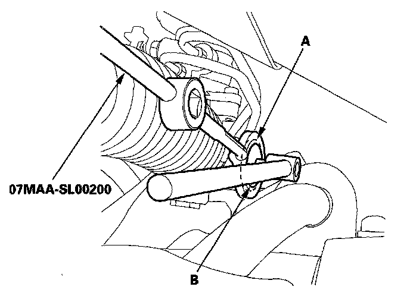
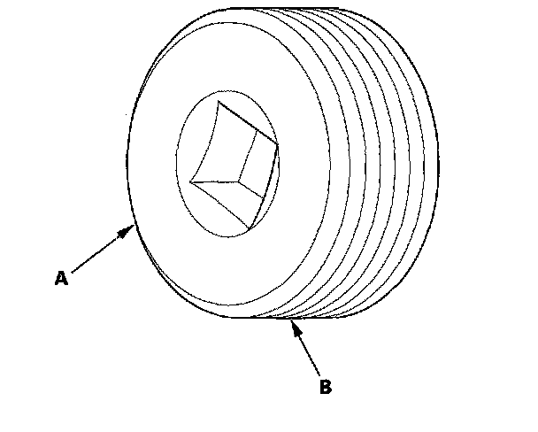
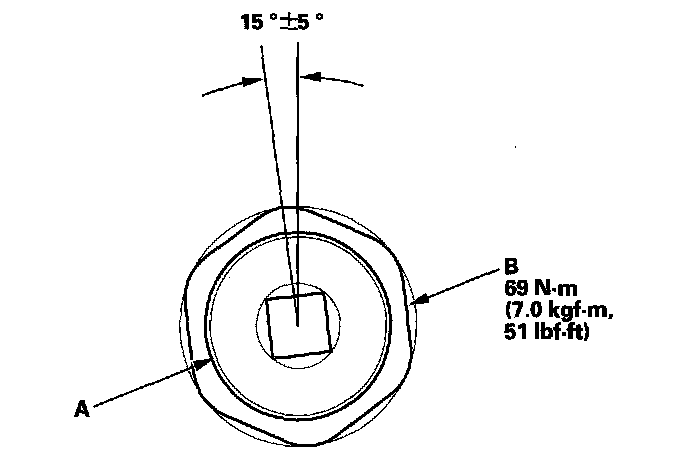

Steering Gear: Adjustments
Rack Guide AdjustmentSpecial Tools Required
Locknut wrench, 43 mm 07MAA-SL00200
1. Set the wheels in the straight ahead position.
2. Loosen the rack guide screw locknut (A) with the locknut wrench, then remove the rack guide screw (B).

3. Remove the old sealant from the rack guide screw (A) and apply new sealant (Loctite 565) to the middle of the threads (B). Loosely install the rack guide screw on the steering gearbox.

4. Tighten the rack guide screw (A) to 25 N-m (2.5 kgf-m, 18 lbf-ft) then loosen it.

5. Retighten the rack guide screw to 3.9 N-m (0.4 kgf-m, 4 lbf-ft) then back it off to the specified angle.
Specified return angle: 15° ± 5°
6. Hold the rack guide screw stationary with a wrench, and tighten the locknut by hand until it's fully seated.
7. Install the locknut wrench on the locknut (B) and hold the rack guide screw stationary with a wrench. Tighten the locknut to the specified torque.
8. Check for unusual steering effort through the complete turning range.
9. Check the steering wheel rotation play and the power assist.